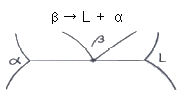
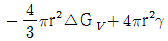
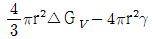
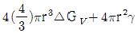
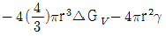
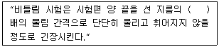

금속재료산업기사 (2018-03-04 기출문제)
1과목: 금속재료
1. 저융점합금의 금속원소로 사용되지 않는 것은?
- Zn
- Pb
- Mo
- Sn
(정답률: 76%)

2. 보자력이 큰 경질 자성재료에 해당되는 것은?
- 희토류계자석
- 규소강판
- 퍼멀로이
- 센더스트
(정답률: 67%)
3. 36%Ni, 12%Cr이 함유된 철합금으로 온도 변화에 따른 탄성율의 변화가 거의 없어 지진계의 부품, 정밀 저울의 스프링 등에 사용되는 것은?
- 칸달(Kanthal)
- 인바(invar)
- 엘린바(elinvar)
- 슈퍼인바(Super Invar)
(정답률: 59%)
4. 탄소강에서 가장 취약해지는 청열취성이 나타나는 온도 구간으로 옳은 것은?
- 50~100℃
- 200~300℃
- 350~450℃
- 500~600℃
(정답률: 76%)
5. 금속재료를 냉간가공 할 때 성질 변화에 대한 설명 중 틀린 것은?
- 항복강도가 증가한다.
- 피로강도가 증가한다.
- 전기전도율이 커진다.
- 격자가 변형되어 이방성을 가지게 된다.
(정답률: 61%)
6. 다음 중 전기 비저항이 가장 큰 것은?
- Ag
- Cu
- W
- Al
(정답률: 60%)
7. 일반적인 분말 야금 공정의 순서가 옳게 나열된 것은?
- 성형→분말제조→소결→후가공
- 분말제조→성형→소결→후가공
- 성형→소결→분말제조→후가공
- 분말제조→후가공→소결→성형
(정답률: 75%)
8. 중(重)금속에 해당하는 것은?
- Al
- Mg
- Be
- Cu
(정답률: 62%)
9. 수소저장합금에 대한 설명으로 틀린 것은?
- 에틸렌을 수소화할 때 촉매로 쓸 수 있다.
- 수소를 흡수·저장할 때 수축하고, 방출시 팽창한다.
- 저장된 수소를 이용할 때에는 금속수소화물에서 방출시킨다.
- 수소가 방출되면 금속수소화물은 원래의 수소저장합금으로 되돌아간다.
(정답률: 69%)
10. 다이스강보다 더 우수한 금형재료이고, 소형물에 주로 사용하며 그 기호를 SKH로 사용하는 강은?
- 탄소공구강
- 합금공구강
- 고속도공구강
- 구상흑연주철
(정답률: 81%)
11. 내열용 Al합금으로서 조성은 Al-Cu-Mg-Ni이며, 주로 피스톤에 사용되는 합금은?
- Y합금
- 켈밋
- 오일라이트
- 화이트메탈
(정답률: 78%)
12. 순철을 상온에서부터 가열할 때 체적이 수축하는 변태점은?
- A1점
- A2점
- A3점
- A4점
(정답률: 58%)
13. 오스테나이트계 스테인리스강을 500~800℃로 가열하면 입계부식의 원인이 되는 것은?
- Fe3O4
- Cr23C6
- Fe2O3
- Cr2O3
(정답률: 55%)
14. 6 : 4황동에 Fe, Mn, Ni, Al 등 원소를 첨가한 고강도 황동의 특징을 설명한 것 중 틀린 것은?
- 취성이 증가한다.
- 내해수성이 증가한다.
- 방식성이 우수하다.
- 대부분이 주물용이다.
(정답률: 63%)
15. 금속을 상온에서 압연이나 딥드로잉(deep drawing)과 같은 소성변형한 후 비교적 낮은 온도에서 가열하면 강도가 증가하고 연성이 감소하는 현상을 무엇이라고 하는가?
- 확산 현상
- 변형시효 현상
- 가공경화 현상
- 질량효과 현상
(정답률: 51%)
16. 탄소강 중에 존재하는 5대 원소에 대한 설명 중 틀린 것은?
- C량의 증가에 따라 인장강도, 경도 등이 증가된다.
- Mn은 고온에서 결정립 성장을 억제시키며, 주조성을 좋게 한다.
- Si는 결정립을 미세화하여 가공성 및 용접성을 증가시킨다.
- S의 함유량은 공구강에서 0.03% 이하 연강에서는 0.⑤% 이하로 제한한다.
(정답률: 57%)
17. 소성합금에 관한 설명으로 틀린 것은?(오류 신고가 접수된 문제입니다. 반드시 정답과 해설을 확인하시기 바랍니다.)
- 내마모성이 높다.
- 사용되는 합금으로 카보로이(Carboloy), 미디아(Media) 등이 있다.
- 고온경도 및 강도가 양호하여 고온에서 변형이 적다.
- 사용목적과 용도에 따라 재질의 종류와 형상이 단순하고, 초경합금으로 SnC가 많이 사용된다.
(정답률: 54%)
18. 고로에서 출선한 용선에 산소를 불어 넣어 탄소와 규소 등 불순물을 산화 제거하여 강을 만드는 제강법은?
- 전로 제강법
- 평로 제강법
- 전기로 제강법
- 도가니로 제강법
(정답률: 62%)
19. 해드필드(hadfield)강에 대한 설명으로 옳은 것은?
- 페라이트계 강이다.
- 항복점은 높으나 인장강도는 낮다.
- 열처리 후 서냉하면 결정립계에 M3C가 석출하여 인성을 높여준다.
- 열전도성이 나쁘고, 팽창계수가 커서 열변형을 일으키기 쉽다.
(정답률: 47%)
20. 구상흑연주철에 대한 설명으로 틀린 것은?
- 불스아이(Bull's eye) 조직을 갖는다.
- 바탕 조직 중에 8~10%의 구상흑연이 존재 한다.
- 구상화 처리 후 접종제로는 Si-Zn이 사용된다.
- 구상화용탕처리에서 처리시간이 길어지면 구상화 효과가 없어지는데 이것을 Fading 현상이라 한다.
(정답률: 60%)
2과목: 금속조직
21. 금속의 탄성계수에 대한 설명 중 옳은 것은?
- 원자간 거리가 증가하면 탄성률은 증가한다.
- 탄성계수는 온도가 증가할수록 증가한다.
- 탄성계수는 미세조직의 변화에 따라 크게 변화한다.
- 일축변형율에 대한 측면 변형율의 비를 프아송비(Poisson's radio)라 한다.
(정답률: 59%)
22. 순철의 변태가 아닌 것은?
- A1점
- A2점
- A3점
- A4점
(정답률: 67%)
23. 규칙-불규칙 변태의 성질에 대한 설명으로 틀린 것은?
- 규칙격자는 일반적으로 전기전도도가 커진다.
- 규칙격자합금을 소성가공하면 규칙도가 증가한다.
- 규칙격자로 되면 일반적으로 경도와 강도가 증가한다.
- 규칙격자상은 강자성체이나 불규칙상은 상자성체이다.
(정답률: 45%)
24. 교체상태에서 확산속도가 작아 균등하게 확산하지 못하고 결정립 내에서 부분적으로 불평형이 생겨 수지상정으로 나타나는 현상은?
- 주상조직
- 입내편석
- 입계편석
- 유심조직
(정답률: 50%)
25. 이원(二元) 이상의 합금에서 복합적인 상호확산을 하는 것은?
- 입계 확산
- 표면 확산
- 전위 확산
- 반응 확산
(정답률: 41%)
26. 면심입방격자 금속의 슬립면과 슬립방향은?
- 슬립면: {111}, 슬립방향: <110>
- 슬립면: {110}, 슬립방향: <111>
- 슬립면: {0001}, 슬립방향: <2110>
- 슬립면: {1111}, 슬립방향: <0001>
(정답률: 61%)
27. 다음 그림과 같은 상태도는 어떤 반응인가? (단, α, β는 고용체이며, L은 용액이다.)

- 공정반응
- 재융반응
- 포정반응
- 편정반응
(정답률: 39%)
28. 응고과정에서 고상 핵(구형)의 균일 핵생성에 대한 자유에너지 변화(△Gtotal)의 표현으로 옳은 것은? (단, △GV : 체적자유에너지, γ : 표면에너지, r : 고상의 반지름이다.)
- △Gtotal =

- △Gtotal =

- △Gtotal =

- △Gtotal =

(정답률: 50%)
29. Cd, Zn 과 같은 금속에서 슬립면에 수직으로 압축하면 슬립이 일어나기 곤란해 변형이 생기는 부분을 무엇이라 하는가?
- 쌍정 밴드(twin band)
- 킹크 밴드(kink band)
- 완전 밴드(perfect band)
- 증식 밴드(multiplication band)
(정답률: 69%)
30. 회복(recovery)에서 축적에너지에 대한 설명으로 틀린 것은?
- 축적에너지의 양은 결정입도가 감소함에 따라 증가한다.
- 내부 변형이 복잡할수록 축적에너지의 양은 증가한다.
- 불순물 합금원소가 첨가될수록 축적에너지의 양은 감소한다.
- 낮은 가공온도에서의 변형은 축적에너지의 양을 증가시킨다.
(정답률: 48%)
31. 결정립 내에 있는 원자에 비하여 결정입계에 있는 원자의 결합에너지 상태는?
- 결합에너지가 크므로 안정하다.
- 결합에너지가 크므로 불안정하다.
- 결합에너지가 적으므로 안정하다.
- 결합에너지가 적으므로 불안정하다.
(정답률: 51%)
32. 공정형 상태도에서, 성분금속 M과 N이 고온의 액체에서 완전히 서로 용해하나 고체에서는 전혀 용해하지 않는다고 가정 할 때 성분금소 M에 소량의 N을 첨가하면 M의 응고점이 저하함을 볼 수 있다. 이러한 응고점 강하의 원인을 가장 옳게 설명한 것은?
- N원자의 응고점이 낮으므로
- N원자의 확산 운동 때문에
- 두 원자에 결정구조가 다르므로
- 두 원자의 응고점이 다르므로
(정답률: 49%)
33. 냉간가공하여 결정립이 심하게 변형된 금속을 가열할 때 발생하는 내부변화의 순서로 옳은 것은?
- 결정핵 생성→결정립 성장→회복→재결정
- 결정핵 생성→회복→재결정→결정립 성장
- 회복→결정핵 생성→재결정→결정립 성장
- 회복→재결정→결정핵 생성→결정립 성장
(정답률: 46%)
34. 금속간 화합물의 특징을 설명할 것 중 틀린 것은?
- 규칙·불규칙 변태가 있다.
- 복잡한 결정구조를 가지며 소성변형이 어렵다.
- 주기율표 중의 동족원소는 서로 거의 화합물을 만들지 않는다.
- 성분금속의 원자가 결정의 단위격자 내에서 일정한 자리를 점유하고 있다.
(정답률: 32%)
35. 용질원자와 칼날전위의 상호작용을 무엇이라고 하는가?
- Oxidation pining
- Cottrell effect
- Frank-read source
- Peierls stress
(정답률: 63%)
36. 다음 중 고용체강화에 대한 설명으로 옳은 것은?
- 용매원자와 용질원자 사이의 원자 크기의 차이가 적을수록 강화효과는 커진다.
- 일반적으로 용매원자의 격자에 용질원자가 고용되면 순금속보다 강한 합금이 되는 것이 고용체강화이다.
- Cu-Ni합금에서 구리의 강도는 40%Ni이 첨가될 때까지 증가되는 반면 니켈은 60%Cu가 첨가될 때 고용체강화가 된다.
- 용매원자에 의한 응력장과 가동전위의 응력장이 상호 작용을 하여 전위의 이동을 원활하게 하여 재료를 강화하는 방법이다.
(정답률: 48%)
37. 냉간가공으로 생긴 집합조직이 아닌 것은?
- 변형집합조직
- 섬유상조직
- 재결정집합조직
- 가공집합조직
(정답률: 40%)
38. 입방격자<100>에는 몇 개의 등가 방향이 속해 있는가?
- 2
- 4
- 6
- 8
(정답률: 46%)
39. 금속결정 내의 결함 중 면간결함(interfacial defect)에 해당되는 것은?
- 전위
- 수축공
- 격자간원자
- 결정입자경계
(정답률: 48%)
40. 강철의 결정입도번호가 6일 경우 배율 100배의 현미경 사진 1in2내에 들어 있는 결정 입자수는 얼마인가?
- 32
- 64
- 128
- 256
(정답률: 42%)
3과목: 금속열처리
41. 냉간가공, 단조 등으로 인한 조직의 분균일제거, 결정립 미세화, 물리적, 기계적 성질 등의 표준화를 목적으로 대기 중에 냉각시키는 열처리는?
- 뜨임
- 풀림
- 담금질
- 노멀라이징
(정답률: 65%)
42. 재질이 같을 때에는 재료의 지름 크기에 따라 퀜칭∙경화된 재료의 내부조직 깊이가 다르며 내부와 외부의 경도차가 생기게 된다. 이러한 현상을 무엇이라 하는가?
- 경화능
- 형상효과
- 질량효과
- 표피효과
(정답률: 61%)
43. 열처리의 냉각방법 3가지 형태에 해당되지 않는 것은?
- 급냉각
- 연속냉각
- 2단냉각
- 항온냉각
(정답률: 60%)
44. 담금질된 강의 경도를 증가시키고 시효변형을 방지하기 위한 목적으로 0℃ 이하의 온도에서 처리하는 것은?
- 수인처리
- 조질처리
- 심냉처리
- 오스포밍처리
(정답률: 75%)
45. 강의 담금질성을 판단하는 방법이 아닌 것은?
- 강박시험을 통한 방법
- 임계지름에 의한 방법
- 조미니시험을 통한 방법
- 임계냉각속도를 이용하는 방법
(정답률: 52%)
46. 담금질 균열의 방지대책에 대한 설명으로 틀린 것은?
- Ms ~ Mf 범위에서 가급적 급랭을 한다.
- 살두께의 차이와 급변을 가급적 줄인다.
- 시간 담금질을 채용하거나 날카로운 모서리 부분을 라운딩(R) 처리하여 준다.
- 냉각시 온도의 불균일을 적게 하며, 가급적 변태도 동시에 일어나게 한다.
(정답률: 57%)
47. 암모니아 가스에 의한 표면 경화법은?
- 침탄법
- 질화법
- 액체침탄법
- 고주파경화법
(정답률: 66%)
48. 열전대 기호와 가열한계 온도가 바르게 짝지어진 것은?
- R(PR) - 1000℃
- K(CA) - 1200℃
- J(IC) - 350℃
- T(CC) - 1600℃
(정답률: 53%)
49. 구리 및 구리 합금의 열처리에 대한 설명으로 틀린 것은?
- α+β 황동은 재결정 풀림과 담금질 열처리를 한다.
- α 황동은 700~730℃ 온도에서 재결정 풀림을 한다.
- 순동은 재결정 풀림을 하고, 재결정 온도는 약 270℃이다.
- 상온 가공한 황동 제품은 시기균열을 방지하기 위해 1200℃이상에서 고온풀림을 한다.
(정답률: 48%)
50. 열처리로에서 제품을 가열할 때 열전달 방식이 아닌 것은?
- 복사가열
- 대류가열
- 전도가열
- 진공가열
(정답률: 56%)
51. 다음 열처리로에서 제품을 가열할 때 열전달 방식이 아닌 것은?(오류 신고가 접수된 문제입니다. 반드시 정답과 해설을 확인하시기 바랍니다.)
- 마퀜칭(marquenching)
- 오스템퍼링(austempering)
- 시간 담금질(time quenching)
- 마템퍼링(martempering)
(정답률: 58%)
52. 베릴륨 청동을 용체화처리 한 후 시효처리의 목적으로 가장 옳은 것은?
- 경화
- 연화
- 취성여부
- 내부응력 제거
(정답률: 46%)
53. 염욕 열처리 시 염욕이 열화를 일으키는 이유가 아닌 것은?
- 흡습성 염화물의 가수 분해에 의한 열화때문
- 중성염욕에 포함되어 있는 유해 불순물에 의한 열화 때문
- 고온 용융염욕이 대기 중의 산소와 반응하여 염기성으로 변질될 때
- 1000℃이하의 용융염욕에 탈산제 Mg-Al(50%-50%)을 혼입 사용하였을 때
(정답률: 48%)
54. 로 내에 장착된 슬로트가 있으며, 소형부품의 연속 가열이나 침탄처리에 적합한 열처리 설비는?
- 상형로(box type furnace)
- 회전 레토르트로
- 피트로(원통로)
- 대차로
(정답률: 43%)
55. 다음의 강을 완전 풀림 하게 되면 나타나는 조직으로 옳은 것은?
- 아공석강 → 헤드필드강 + 레데뷰라이트
- 과공석강 → 시멘타이트 + 층상펄라이트
- 공석강 → 페라이트 + 레데뷰라이트
- 과공정 주철 → 페라이트 + 스텔라이트
(정답률: 63%)
56. 복잡한 형상이나 대형물의 탄화물 피복 처리법(TD처리)에서 소재 변형 및 균열을 방지하기 위해 염욕 침지 전에 반드시 처리해 주어야 하는 공정은?
- 뜨임
- 예열
- 침탄
- 래핑
(정답률: 53%)
57. 강을 담금질 할 때 냉각 능력이 가장 좋은 것은?
- 물
- 염수
- 기름
- 공기
(정답률: 57%)
58. 강의 조직 중 경도가 가장 높은 것은?
- 페라이트(Ferrite)
- 펄라이트(Pearlite)
- 시멘타이트(Cementite)
- 오스테나이트(Austenite)
(정답률: 66%)
59. 금속재료를 진공 중에서 가열하면 합금 원소가 증발한다. 다음 중 증기압이 높아 가장 증발하기 쉬운 금속은?
- Mo
- Zn
- C
- W
(정답률: 45%)
60. 구상흑연주철의 열처리에서 제1단 흑연화처리를 한 후 제2단 흑연화 처리를 하는 목적으로 옳은 것은?
- 취성을 촉진시키기 위해
- 압축력과 절삭성 등을 저하시키기 위해
- 내식성과 조대한 입자를 형성하기 위해
- 충격값이 우수한 고연성(高延性)의 주물을 만들기 위해
(정답률: 55%)
4과목: 재료시험
61. 경도시험에 대한 설명으로 옳은 것은? (문제 오류로 실제 시험에서는 모두 정답처리 되었습니다. 여기서는 1번을 누르면 정답 처리 됩니다.)
- 경도측정 시 시험편의 측정면이 압입자의 압입방향과 수평을 이루도록 한다.
- 로크웰(Rockwell) 경도에서 단단한 경질 금속에 대한 시험은 강구 압입자를 사용한다.
- 브리넬(Brinell) 경도시험에서 경도값을 표기할 때 HRB 로 나타낸다.
- 쇼어(Shore) 경도시험은 시험편의 압입자 깊이로 경도값을 측정한다.
(정답률: 66%)
62. 한국산업표준에서 경강선 비틀림 시험에 대한 ( ) 안에 알맞은 수치는?

- 10
- 50
- 100
- 200
(정답률: 43%)
63. 알루민산염 개재물의 종류에 해당하는 것은?
- 그룹 A형
- 그룹 B형
- 그룹 C형
- 그룹 D형
(정답률: 54%)
64. 응력 측정시험 방법이 아닌 것은?
- 무아레법
- 조미니 시험
- 광탄성 시험
- 전기적인 변형량 측정법
(정답률: 59%)
65. 부식액에 시편을 침지하여 부식시켜 조직이 잘 나타나지 않을 때 면봉 등으로 시편 표면을 닦아 내면서 부식시키는 방법은?
- Deep부식
- 전해부식
- Wipe부식
- 가열부식
(정답률: 66%)
66. 자분탐상시험방법 중 원형 자계를 형성하는 것이 아닌 것은?
- 극간법
- 프로드법
- 축 통전법
- 전류 관통법
(정답률: 51%)
67. 충격시험에서 해머를 울렸을 때의 각도를 α, 시험편 파단 후의 각도를 β라고 할 때, 충격 흡수에너지를 구하는 식은?
- WR(cosβ-cosα)
- WR(cosα-cosβ)
- WR(cosα-1)
- WR(cosβ-1)
(정답률: 64%)
68. KS 5호 인장시험편으로 인장시험 하였을 때 최대하중이 6460kgf, 단면적이 125mm2라면 인장강도의 값은 얼마인가?
- 21.68kgf/mm2
- 31.68kgf/mm2
- 41.68kgf/mm2
- 51.68kgf/mm2
(정답률: 52%)
69. 금속재료 파단면의 파면검사, 주조재의 응고과정 등을 육안으로 관찰하거나 10배 이내의 확대경으로 검사하는 것은?
- 매크로검사
- 광학현미경검사
- 전자현미경검사
- 원자현미경검사
(정답률: 60%)
70. 9.8N(1kgf) 이하의 하중을 가하여 고배율의 현미경으로 미소한 경도 분포 등을 측정하는 것은?
- 쇼어 경도시험
- 브리넬 경도시험
- 로크웰 경도시험
- 마이크로 비커즈 경도시험
(정답률: 62%)
71. 어떤 기계나 구조물 등을 제작하여 사용할 때 변동 응력이나 반복 응력이 무한히 반복되어도 파괴되지 않는 내구 한도를 찾고자 하는 시험은?
- 피로시험
- 크리프시험
- 마모시험
- 충격시험
(정답률: 62%)
72. 금속재료의 압축 시험편을 단주, 중주, 장주로 나눌 때 중주 시험편은 높이(h)가 지름(D)의 약 몇 배의 재료를 사용하는가?
- 0.9배
- 3배
- 10배
- 15배
(정답률: 51%)
73. 불꽃시험에 있어서 불꽃의 파열이 가장 많은 강은?
- 0.10% 탄소강
- 0.20% 탄소강
- 0.35% 탄소강
- 0.45% 탄소강
(정답률: 68%)
74. 전기가 대기 중에서 스파크(Spark)방전될 때 가장 많이 생성되는 가스는?
- CO2
- H2
- O2
- O3
(정답률: 52%)
75. 초음파탐상검사에서 STB-A1 시험편을 사용하여 측정 및 조정할 수 없는 것은?
- 측정 범위의 조정
- 탐상감도의 조정
- 경사각 탐촉자의 입사점 측정
- 경사각 탐촉자의 수직점 측정
(정답률: 45%)
76. 에릭슨시험(Erichsen test)은 재료의 어떤 성질을 측정할 목적으로 시험하는가?
- 연성(ductility)
- 미끄럼(slip)
- 마모(wear)
- 응력(stress)
(정답률: 56%)
77. 상대적으로 경(硬)한 입자나 미세돌기와의 접촉에 의해 표면으로부터 마모입자가 이탈되는 현상을 나타내는 마모는?
- 응착마모
- 연삭마모
- 부식마모
- 표면피로마모
(정답률: 58%)
78. 설퍼 프린트(sulfur print)법에 사용되는 재료로 옳은 것은?
- 증감지, 투과도계
- 글리세린, 기계유
- 형광 침투제, 유화제
- 황산, 브로마이드 인화지
(정답률: 60%)
79. 와전류탐상시험에 대한 설명으로 옳은 것은?
- 비접촉으로 시험할 수 있다.
- 표면에서 떨어진 내부 시험은 위치의 흠 검출도 가능하다.
- 어떤 재료에도 관계없이 모두 적용할 수 있다.
- 시험결과의 흠 지시로부터 직접 흠의 종류를 판별할 수 있다.
(정답률: 53%)
80. 전단응력과 전단 변형은 탄성한계 내에서 비례하므로 응력(τ)과 전단변형율(γ)과의 비례 관계식 τ=G∙γ로 표시할 수 있다. 이때 G가 의미하는 것은?
- 압축계수
- 강성계수
- 마찰계수
- 전단계수
(정답률: 49%)